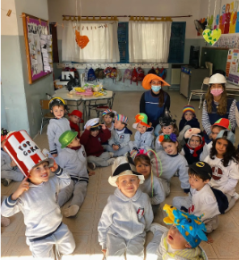
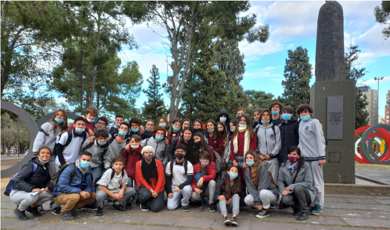
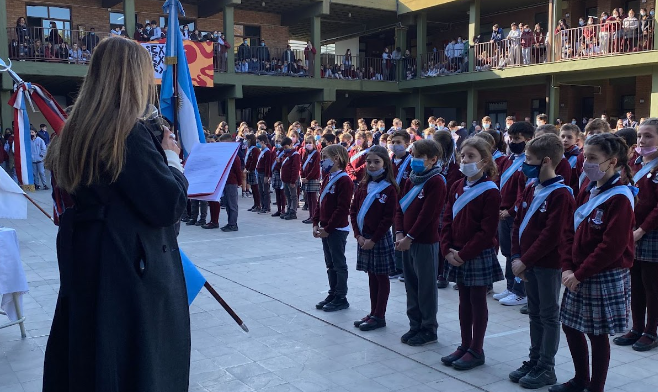

Boletín Mayo 2022

Volvemos a encontrarnos para contarles algunas de las vivencias de los últimos días, así como novedades de interés de la Comunidad del Valle.
Hemos vivido juntos una inolvidable Semana Santa en el Colegio; así como la celebración del
día de la Virgen del Valle, con el homenaje a seño Angie que nos deja después de más de 30 años con nosotros.
Continuamos abriendo caminos de comunicación y unión, ahora con nuestro Instagram institucional, donde iremos compartiendo
publicaciones de las actividades de nuestro Colegio; sumado al aporte de la Unión de Padres de Familia.
Aprovechamos para recordarles algunas de las utilidades que, como familias, tienen a disposición en la plataforma MiEscuelaDigital,
sumamente útil para el seguimiento de la trayectoria académica de los alumnos.
Hemos iniciado el período de inscripciones para el ciclo lectivo 2023.
¡Y mucho más!
Día de la Virgen del Valle y Homenaje a Seño Angi
A fines de abril tuvimos la inmensa alegría de poder celebrar el día de nuestra madre, la Virgen del Valle, tanto en el Colegio como en el Templo Parroquial...
continuar leyendoInscripciones Ciclo Lectivo 2023
Quienes tengan conocidos que quieran sumarse al Colegio el año próximo, pueden compartirles esta novedad.
continuar leyendoMi Escuela Digital

El Colegio cuenta con una plataforma de avanzada en cuanto a la gestión académica y pedagógica online, que favorece el intercambio con las familias.
continuar leyendoTal como les adelantáramos en el Boletín anterior, abrimos nuestro Instagram, con novedades, actividades, y noticias de nuestro quehacer institucional.
continuar leyendoNivel Superior
En abril, las estudiantes de cuarto año comenzaron la preparación para realizar sus Práctica y Residencia, última instancia de la carrera.
continuar leyendoNivel Primario

Con el entusiasmo de recuperar el espacio áulico en las salas de Informática del Colegio, los alumnos de ambos ciclos del nivel Primario se encuentran llevando a cabo, con gran alegría, actividades relacionadas a programación creativa.
continuar leyendoUnión de Padres

La Unión de Padres de Familia es un equipo en el que trabajamos voluntariamente con el objetivo de contribuir con el Colegio en la formación humana de nuestros hijos, dando ejemplo de compromiso desde hace más de veinte años.
continuar leyendo